Curious Being
Megalithic Knobs Worldwide: Molded or Quarried — Why It Matters
Tina · 24 min · watch on YouTube · summarised 2026-08-22
The core move is methodological, and it is the most useful part of the video: the knobs found on megalithic stonework around the world are routinely discussed as a single mystery, and Tina argues they are at least four different things with four different causes. Lumping them together, she says, "muddies the water" — you cannot explain a category that isn't one.
Three of the four types she considers ordinary construction. Only the third is the anomaly, and that is where her actual claim sits.
Type 1 — Lifting bosses (ordinary)
Protrusions deliberately left on a block so it can be moved with ropes and levers, sometimes never trimmed off afterwards, sometimes kept as decoration.
Diagnostic features — and these matter, because they become the test for the other types:
- centred on the block, or symmetrically paired
- flat bottom, so a rope seats and the block hangs level
- enough projection to actually tie or hook onto
Where 02:20–04:26 — the Propylaea at Athens, which she says carries more than 400 of them on its façades. Egyptian sarcophagus lids, usually two pairs, which she reads as needed because a long thin lid would rotate on a single pair. Some Indian temples. Related lifting methods appear alongside: lewis bolt holes at Roman sites, and lifting-tong holes on the blocks of the Segovia aqueduct.
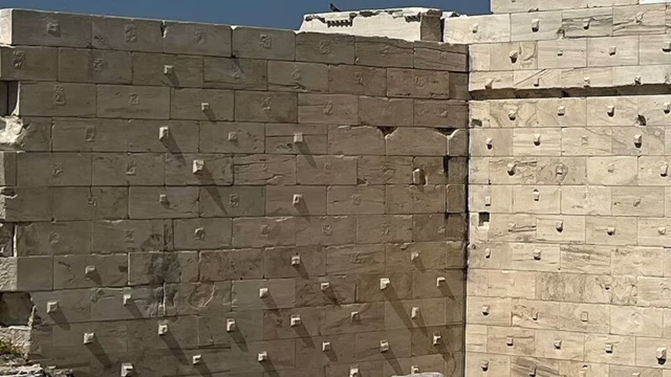
This is the accepted archaeological reading of knobs, and she accepts it for these. Once you have seen what a lifting boss looks like, the Peruvian knobs below need no argument.
Type 2 — Mortise-and-tenon joints (ordinary)
Large, regular, rectangular protrusions that lock into a matching recess in the next block — the tenon is the knob. Structural, not incidental.
Where 06:41–07:48 — Coricancha in Peru, the Osireion at Abydos, and a Chinese stone tomb she covered in an earlier video. Her test for telling these from lifting bosses is size: at Coricancha some are "unnecessarily oversized" for lifting, and unlike lifting bosses they have no reason to line up.
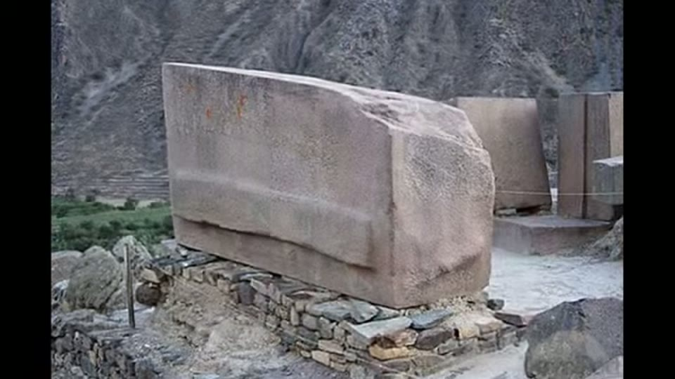
Too large and too linear to be a lifting boss: her test against bosses is size, and unlike bosses these have no reason to line up.
Type 4 — Designed supports and unfinished decoration (ordinary)
Prominent knobs whose placement implies a specific job 20:55–22:00: cylindrical ones ringing window openings at Machu Picchu, which she reads as supports for horizontal members; evenly spaced rows resembling vigas, exposed beam ends; and bossage — uncut stone deliberately left proud to be carved into mouldings later, which would make some Yangshan and Indian temple knobs simply unfinished work.
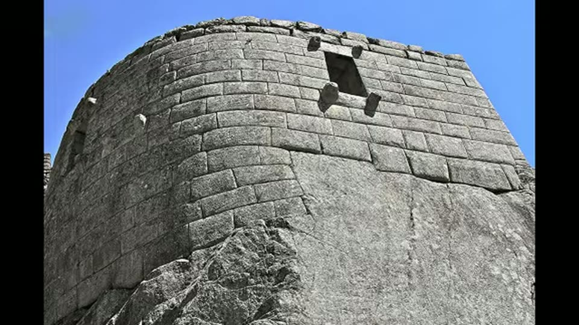
The counter-case, and the reason the four-way split matters: here the placement does imply a function, so these knobs need no anomaly to explain them.
Type 3 — The anomaly, and the actual argument
The observation. A class of knobs that fails every test above 09:57–10:02: irregular and random in shape, frequently off-centre, often too shallow to hold a rope, with sloped bottoms a rope would slide off. Concentrated at Cusco, Sacsayhuamán, Ollantaytambo — and also at the Osireion and the Menkaure pyramid in Egypt.
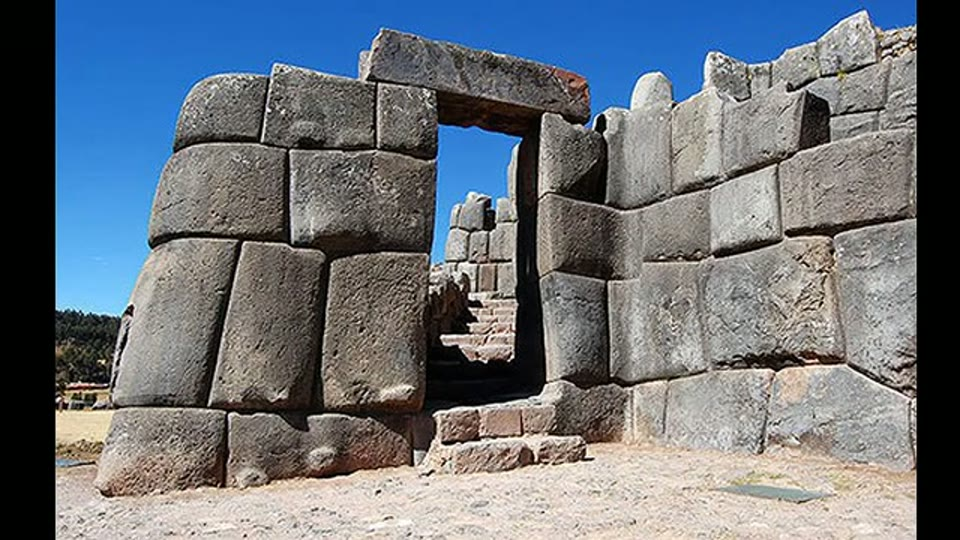
Irregular, off-centre, too shallow to hold a rope, sloped bottoms a rope would slide off — the class that fails every diagnostic for a lifting boss.
The argument's structure is worth noting. She does not argue from the knobs alone. She points out that the sites carrying these knobs share a cluster of other features, and argues that any explanation of the knobs must explain the cluster too:
| feature | what she says |
|---|---|
| dry-stacked, no mortar | joints so tight "a single piece of paper couldn't be inserted" |
| no quarry or tool marks | surfaces smooth where cutting marks should be |
| scraping marks | broad shallow strokes, sometimes running across multiple blocks |
| stamp-like indents | pressed-in marks she calls "inverted knobs" |
| bulging, pillowy faces | consistent slight swelling, strongest at Sacsayhuamán and Cusco |
| sunken joints | seams subtly recessed, as if worked while soft |
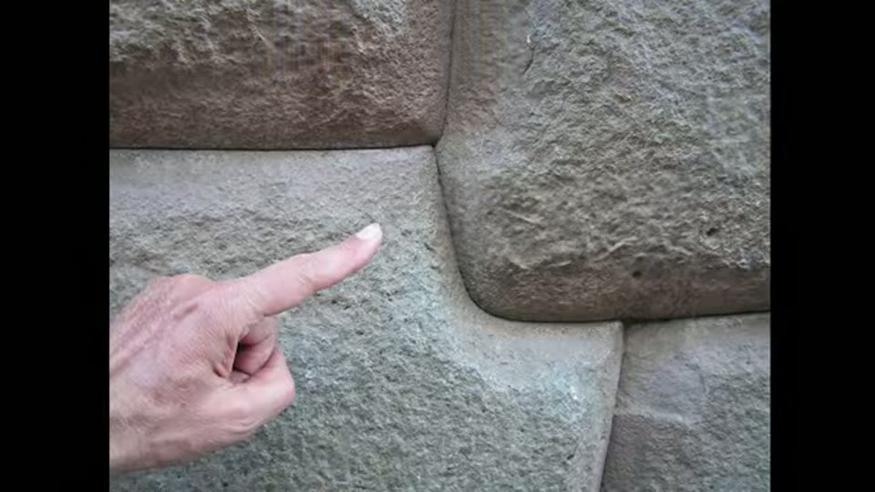
The consistent swelling that goes with the anomalous knobs: faces bulging softly, joints sunk between them, and a fit tight enough that she repeats the line about a sheet of paper.
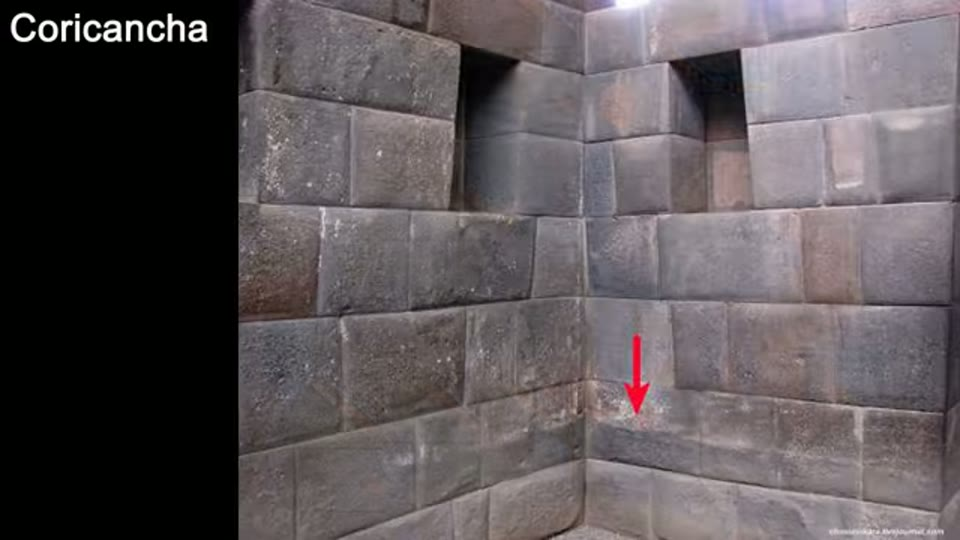
A mark that runs across a joint onto the next block cannot have been made before the blocks were placed, which is hard to arrange if each was cut separately.
The strongest single piece of evidence 11:09–12:16 is the partially-finished block. At the Menkaure pyramid, and again at the Osireion, she points to blocks that are flat on one face and bulging on another — work stopped mid-process. She reads this as screeding, the modern concrete step where a straight edge is dragged across a pour to level it, caught half-done. On that reading these are abandoned projects, which is why the method is still legible at all.
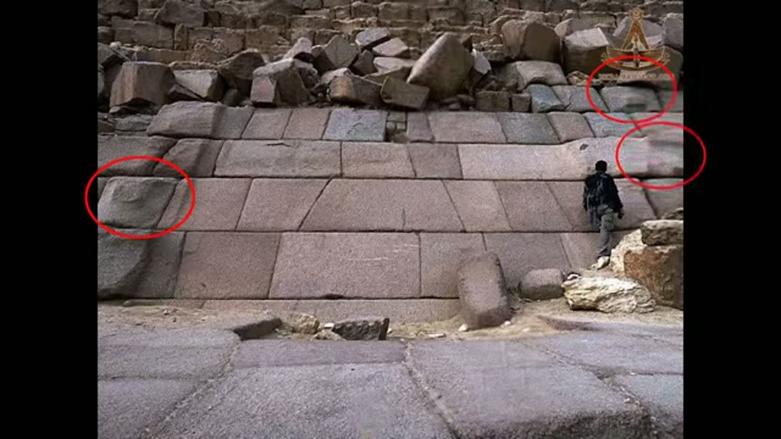
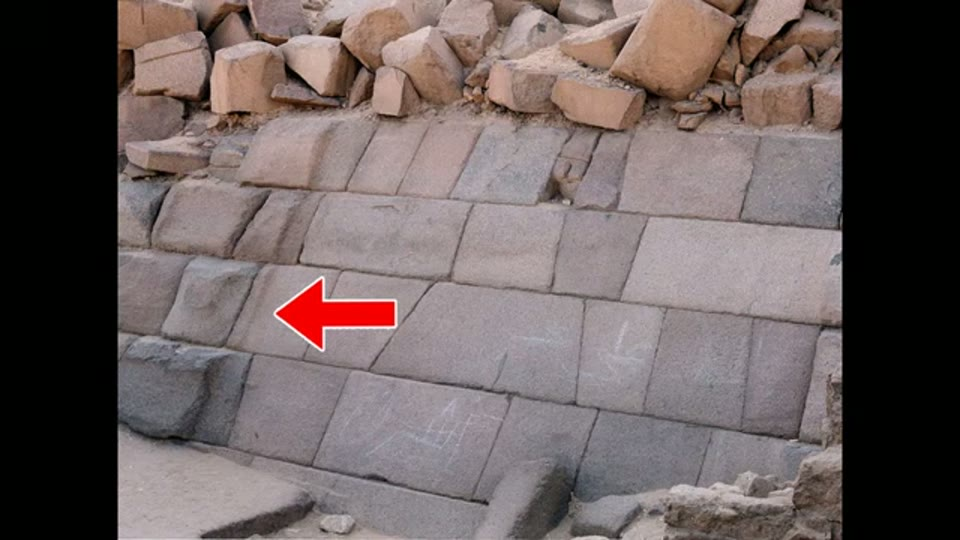
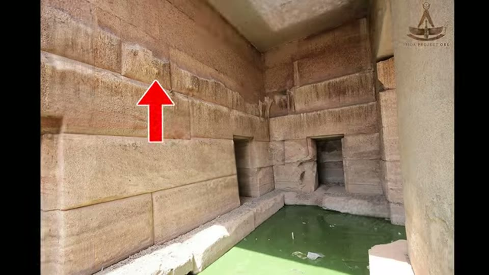
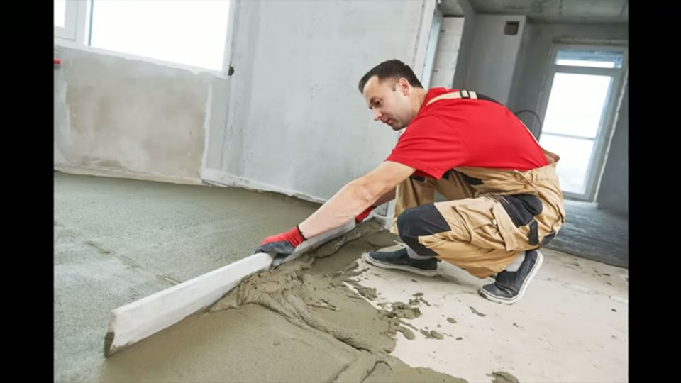
Blocks left flat on one face and bulging on another: work stopped mid-process, which she reads as screeding interrupted.
The claim. These sites were not carved from quarried stone but cast in place from a concrete or geopolymer that had a plastic state before curing. Blocks were poured or moulded, set while still firm-but-pliable, then compressed together — "like squeezing Play-Doh balls" — which produces the interlocking zigzag joins without any need to cut a bespoke fit.
How the knobs follow from it 18:40–19:47. Excess material sagged under gravity to the lower part of a block; a tool or suction device removed the surplus; the knobs are the leftovers of that removal. Her supporting observation is distributional: the knobs sit predominantly on the lower portions of blocks, which is where gravity would leave excess.
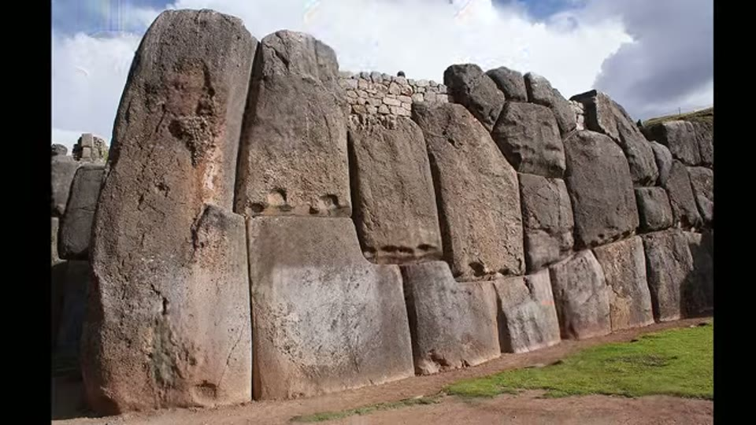
Pressed-in rectangular marks she calls inverted knobs - on the casting reading, where a tool pushed a sagging block back up.
Slump explains the variation. Concrete consistency is governed by water content. A dry, near-zero-slump mix holds a crisp edge the moment the mould comes off, giving the sharp rectangular blocks at Coricancha. A wetter mix slumps and rounds, giving the pillowy look at Sacsayhuamán and Cusco. Same method, different recipe.
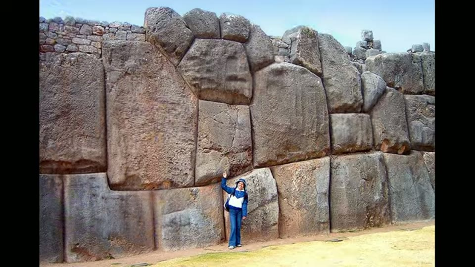
A dry, near-zero-slump mix holds a crisp edge the moment the mould comes off; a wetter mix slumps and rounds. Same method, different recipe.
What she explicitly rejects 12:16–13:22: the stone-softening idea — that quarried stone was chemically softened and re-hardened. She says she has not seen anyone demonstrate it is feasible, and that casting would be easier and more efficient than quarrying, transporting and cutting to fit.
See also
How Were Sacsayhuamán Polygonal Walls Built? — the same hypothesis laid out in full, for the whole wall rather than one feature, and with the one piece of laboratory analysis she cites anywhere.
What you can check yourself
- The partially-flattened blocks at Menkaure and the Osireion are the load-bearing evidence. They are photographable, and either the flat-and-bulging-on-one-block description holds or it does not.
- Scraping marks that cross block boundaries would be hard to explain on individually quarried blocks, since the mark would have to be applied after placement.
- Knob distribution — her claim that they cluster on lower block portions is a counting exercise anyone could do from photographs.
- The Propylaea count ("more than 400") is a stated figure that can be checked.
What the video does not settle
- She does not claim all type-3 knobs came from the suction process, only that many could have; the mechanism is offered as plausible, not demonstrated.
- No material analysis is presented here — the case is entirely morphological, from how the stone looks and behaves. Whether the material at these sites is geopolymer is exactly the contested question elsewhere, and this video does not settle it.
- The four-type scheme is her own, and the assignment of any particular knob to a type is a judgement call.